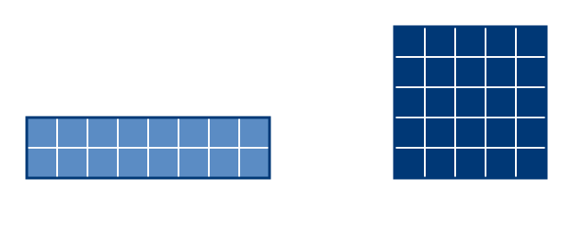

연세대학교 과학영재교육원 수료식 · 특별강연
AI가 수학 문제를 푸는 시대,
무엇이 진짜 실력일까?
AI가 수학을 푼다면, 우리는 왜 배울까?
이해한 수학이 여는 새로운 질문들
노알버트 (Albert No) · 연세대학교 인공지능학과
과학영재교육원 수료 선배 · 2026. 11. 28.
오늘의 세 가지 질문
01
AI 이후의 수학
AI가 증명까지 한다면, 무엇이 달라질까?
02
글에 숨긴 확률
AI가 쓴 글에 흔적을 남길 수 있을까?
03
직관과 함께 커지는 가능성
이해한 수학으로 무엇을 더 할 수 있을까?
01
AI 이후의 수학
AI는 이미 어디까지 왔을까?
AI도 올림피아드 문제를 증명한다
국제수학올림피아드(IMO) 2025 · 공식 채점 기준으로 평가
35 / 42점
금메달 수준 (gold-medal standard)
6문제 중 5문제를 완전히 해결
모든 챗봇이 아니라, 평가된 고급 시스템(Gemini Deep Think)의 결과
Luong & Lockhart, Google DeepMind blog post on Gemini Deep Think at IMO 2025 (gold-medal standard), 2025-07-21
연구의 최전선에도 등장한 AI
나비에–스토크스 방정식: 유체의 움직임을 기술하는 방정식
2026. 9. 8.OpenAI: AI를 활용한
해법 발표
→
2026. 9. 11.Clay 수학연구소:
별도 심사 절차 안내
→
최종 인정발표와 다른,
별도의 절차
발표와 최종 인정은 별개: 그래도 AI가 연구 문제에 도전하는 시대
OpenAI, “On the Navier–Stokes Millennium Prize Problem,” 2026-09-08
Clay Mathematics Institute, “Navier-Stokes Announcement,” 2026-09-11
정답 다음의 질문
문제 이해하기
왜 맞는가 · 언제 틀리는가
다음에 무엇을 물을까
그래서 배운다: 의미와 가정을 알면
더 묻고, 확인하고, 넓힐 수 있다
둘은 이어진 실력 · AI도 두 쪽 모두를 도울 수 있다
도구가 바꾸는 질문
계산기빠른 산술
→
컴퓨터대규모 계산 · 시뮬레이션
→
AI코딩 · 추론 · 탐색을 돕는다
도구가 강해질수록, 시도할 수 있는 질문이 커진다
역사의 단계가 아니라 비유 · 이해는 여전히 질문을 고른다
현상을 질문으로 바꾸는 힘
이해“이 동전, 공정할까?”
→
정식화“앞면 확률이 1/2인가?”
→
검증100번 던져
우연과 비교
추상화: 중요한 것만 남겨, 확인할 수 있는 질문으로 바꾸기
계산 기법도 여전히 필요 · 무엇을 남길지 고르는 것이 핵심
02
글에 숨긴 확률
평범한 글에 확인 가능한 흔적을 남길 수 있을까?
글에 출처를 남길 수 있을까?
나중에 붙인 표시
오늘 점심은 김밥을 먹었다. [AI 생성]
표시를 지우면 끝
생성할 때 남긴 흔적
오늘 점심은 김밥을 먹었다.
겉보기엔 같은 글 · 규칙을 알면 통계로 확인
생성할 때 확인 가능한 흔적을 남기자
출처 표시는 EU·한국 법에도 등장 · 이 방식이 의무는 아님
설명용 예문 · EU AI Act, Art. 50(2) · 인공지능 발전과 신뢰 기반 조성 등에 관한 기본법 제31조
다음 조각을 고르는 확률
토큰: 글의 작은 조각 (단어일 수도, 아닐 수도)
“오늘 점심은 ___”
설명용 가상 예시
확률에 따라 하나 고르기 → 글에 붙이기 → 다시 반복
같은 규칙으로 묶고 세기
만드는 쪽과 확인하는 쪽이 같은 규칙으로 후보를 묶는다
생성할 때
문맥“오늘 점심은”
+
공유 규칙
→
김밥샐러드라면국수
확인할 때
완성된 글
+
같은 규칙
→
표시 묶음(✓)에 든
조각 세기
문맥이 바뀌면 묶음도 바뀐다: 고정된 단어 목록이 아님
초록색 ✓ = 이 문맥의 표시 묶음 · 실제 글에는 색이 없다
조금 바꾼 선택에 흔적이 남는다
회색 = 바꾸기 전 · 파랑 = 바꾼 뒤 (설명용 가상 예시)
김밥
40% →
48%
라면
30% →
24%
국수
20% →
16%
샐러드
10% →
12%
표시 묶음(✓) 합계
50% → 60%
항상 고르진 않는다: 조금 더 자주
길게 모아 통계로 찾는 흔적
동전 100번, 앞면 70번?
여러분이라면? 공정한 동전일까요?
● 앞면 70 · ○ 뒷면 30
우연 모형: 공정하고 독립인 동전 → 기대 50번
불가능하진 않지만, 매우 드물다
“동전이 확실히 이상하다”는 아님
우연이라면 얼마나 드문가?
 기대 50번
70번 이상
약 0.0039%
0
50
70
100
기대 50번
70번 이상
약 0.0039%
0
50
70
100
가로 = 앞면 횟수 · 막대 높이 = 그 횟수가 나올 확률
공정·독립 동전 가정 아래의 드문 정도 · “AI일 확률”이 아니다
흔적은 단서, 판결은 아니다
검출기는 자기 방식의 흔적만 찾는다
흔적 없음 ≠ 사람이 썼다는 증거
Kirchenbauer et al., “On the Reliability of Watermarks for Large Language Models,” ICLR 2024
출처의 질문이 확률의 질문으로
이해“AI가 쓴 글인지
알고 싶다”
→
정식화선택을 조금 기울이고
표시 묶음을 센다
→
검증“우연이라면
얼마나 드문가?”
출처의 질문이 동전의 질문이 되었다
실제 적용에는 공학과 가정 점검이 더 필요
Kirchenbauer et al., “A Watermark for Large Language Models,” ICML 2023
03
직관과 함께 커지는 가능성
이해한 수학으로 더 많은 질문을
좋은 질문을 더 많이 시험하기
질문 바꾸기“10번 중 7번이라면?”
→
AI와 함께
구현
→
독립적으로
확인
→
질문
다듬기
다듬은 질문으로 다시
이해가 질문과 확인을 이끈다
AI도 아이디어를 낼 수 있다 · 확인은 반드시 따로
오래 남은 것은 수학의 의미
공식 · 기법문제 풀이 훈련
→
말로 설명하기“이 식은 무슨 뜻?”
→
의미와 직관새로운 관점
문제 풀이 훈련도 도움이 됐지만,
진짜 중요했던 것은 직관이었다
이곳 영재원에서도, 그 뒤의 삶 전체에서도
같은 합이라면, 균형 잡힐수록 곱이 크다
두 양수 $a, b$ · 합은 $a+b=10$으로 고정

8
2
5
5
2 × 8 = 16
5 × 5 = 25
산술·기하평균 부등식 (AM–GM)
$$\frac{a+b}{2} \ge \sqrt{ab}$$
등호: $a = b$일 때
합이 고정될 때의 이야기 · 모든 문제에서 ‘같게’가 최선은 아님
평균과 함수, 순서가 중요하다
 ━ 곡선 $y=\log x$
╍ 두 점을 잇는 선분
$\log 5$: 평균을 먼저 넣은 값
$\log 4$: 함수값의 평균
$a=2$
$5$
$b=8$
━ 곡선 $y=\log x$
╍ 두 점을 잇는 선분
$\log 5$: 평균을 먼저 넣은 값
$\log 4$: 함수값의 평균
$a=2$
$5$
$b=8$
오목한 log: 평균을 넣은 값 ≥ 함수값의 평균
$\displaystyle \log\frac{a+b}{2} \ge \frac{\log a + \log b}{2}$ ($a, b \gt 0$) · Jensen 부등식의 log 경우
Boyd & Vandenberghe, Convex Optimization, 2004, §3.1.8–3.1.9
이 식은 어떤 이야기를 할까?
문제를 푼 뒤, 세 가지를 물어보기
무슨 뜻일까?
→
어떤 가정이
필요할까?
→
다른 곳에도
쓸 수 있을까?
AI 시대에도 수학을 배우는 이유:
이해한 만큼, AI와 함께 더 많이 묻고 확인한다
1 / 24